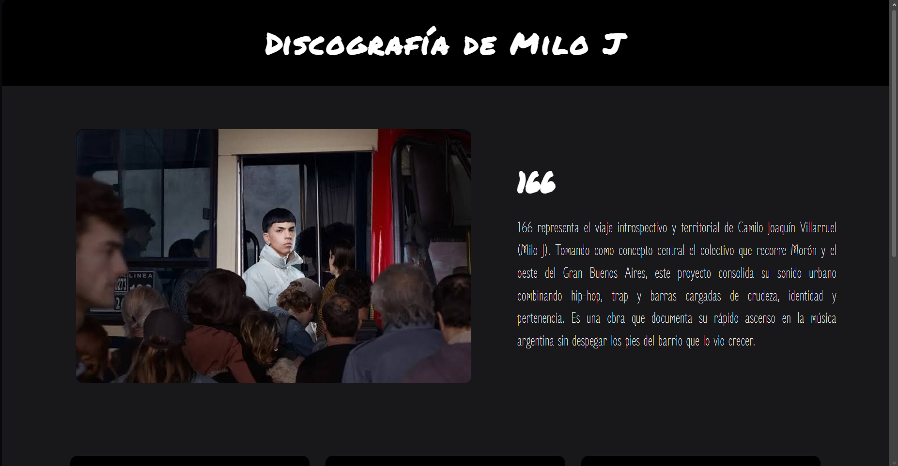
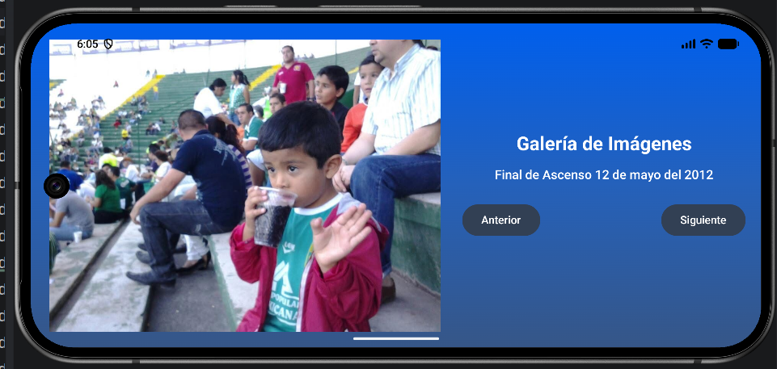
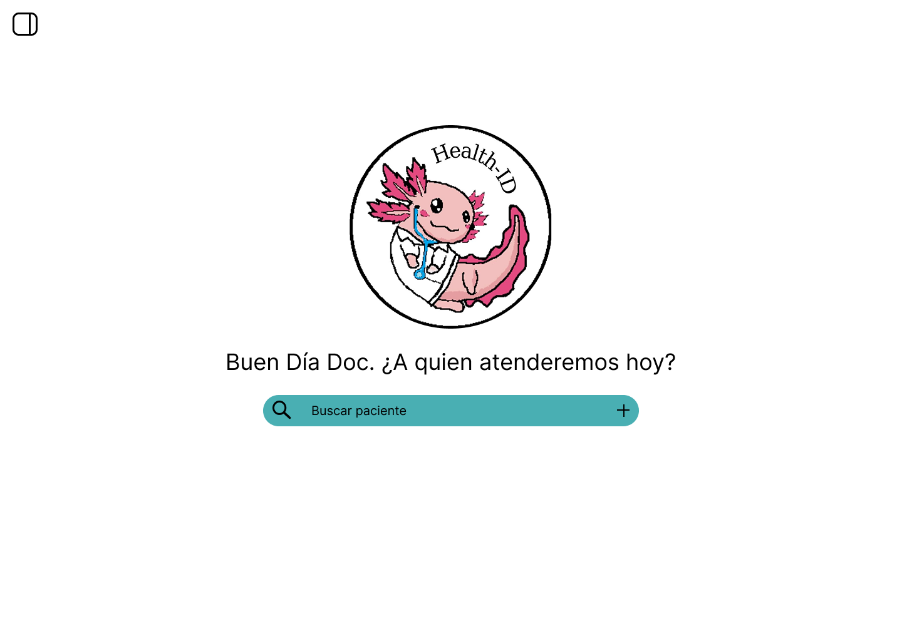

HOLA, SOY
Jacobo Duarte
Estudiante de Desarrollo de Software
Me interesa crear soluciones digitales, diseñar interfaces y desarrollar aplicaciones útiles. Este espacio reúne mis habilidades, proyectos y áreas de interés.
Ver proyectos ContactarmeHOLA, SOY
Me interesa crear soluciones digitales, diseñar interfaces y desarrollar aplicaciones útiles. Este espacio reúne mis habilidades, proyectos y áreas de interés.
Ver proyectos ContactarmeSoy estudiante de T.S.U. en Desarrollo de Software Multiplataforma. Me interesa aprender nuevas tecnologías, resolver problemas y construir proyectos que combinen funcionalidad con una buena experiencia de usuario.
Estructura semántica
Estilos y diseño adaptable
Lógica y programación
Fundamentos de bases de datos
Fundamentos de programación
Desarrollo de aplicaciones móviles

Práctica de HTML5, CSS y Bootstrap para desarrollar una página personal adaptable.

Aplicación en Kotlin para recorrer fotografías y ver una descripción de cada una.

Propuesta de diseño de interfaz para la gestión eficiente y accesible de expedientes e identificación médica.
Este espacio reúne algunos de mis intereses y recursos que disfruto. Más adelante agregaré fotografías tomadas por mí, música y videos que forman parte de lo que me inspira.
Una colección de momentos, lugares y detalles especiales.
Una canción que disfruto y que puedes escuchar desde este reproductor:
Dejo este video de YouTube como una recomendación. Después actualizo este espacio con más contenido audiovisual de mi interés.